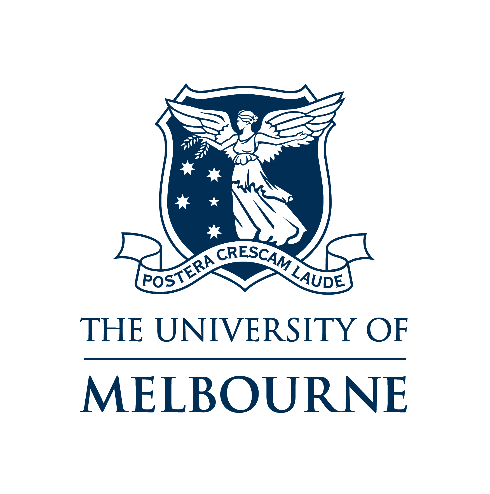

Universities of Autralia
Study at Melbourne
Location
The University of Melbourne's heart is based in Parkville, where our main campus has been situated for 160 years. The Parkville campus has:
- 12 libraries
- 3.6 million books and other items
- 150+ student clubs
- 40+ sporting clubs
- 25+ cafes
The University has seven campus locations across Melbourne and rural Victoria, including the Parkville campus. Only a short walk from Melbourne's city centre, we welcome visitors and invite you to explore our unique cultural, architectural and landscape features and facilities.
Our graduate courses are ideal if you're looking to get a professional masters qualification, develop specialist knowledge or undertake graduate research.
Search from over 270 graduate courses at Melbourne.
Our Undergraduate schools
- Melbourne Business School
- Melbourne Dental School
- Melbourne School of Design
- Melbourne Graduate School of Education
- Melbourne School of Engineering
- Office for Environmental Programs
- Melbourne School of Government
- Melbourne School of Health Sciences
- Graduate School of Humanities & Social Sciences
- Melbourne School of Information
- Melbourne Law School
- Melbourne Medical School
- Melbourne Conservatorium of Music
- Melbourne School of Population and Global Health
- Melbourne School of Psychological Sciences
- Melbourne Graduate School of Science
- Faculty of Veterinary and Agricultural Sciences
- Victorian College of the Arts (VCA)

Entry Requirements International Undergraduate
Minimum requirements for entry:
To be eligible for entry to an undergraduate degree you must fulfill all of the following requirements:
- Complete the Victorian Certificate of Education (VCE) or an equivalent Australian or overseas qualification (see qualifications below).
- Complete and achieve the required grades in each of the prerequisite subjects for the course and any prerequisite tests, interviews or auditions (see Course Search for details about prerequisite subjects and scores).
- Meet the English language requirements.
Fees for Domestic Undergraduate Students
These pages outline the fees for domestic undergraduate students, and provide some information about other fees and costs you will need to consider when studying at the University of Melbourne.
You'll be enrolling in a Commonwealth Supported Place (CSP) which is subsidised by the Australian Government.
You pay a student contribution amount, with the amount determined each year by the Australian Government and the subjects in which you enrol.
The exact cost of your student contribution depends on the subjects you take, not the overall course you are studying.
Payment of the student contribution amount can be made at enrolment (upfront), or can be deferred through HECS-HELP for eligible students.
In 2014 the student contribution amounts for study at the University range from $6,044 to $10,085.for a full-time enrolment. In 2015, student contribution amounts range from $6,152 to $10,266.
Scholarships
Fox Exchange students:
-
Aitchison Travelling Scholarship. Around $5,000
- For Study Abroad or Exchange students
-
Alan Gilbert Mobility Scholarship. Up to $5,000
- For Study Abroad and Exchange students.
Study at Sidney
Location
The University of Sydney has several campuses and teaching facilities spread across greater Sydney, but most of our faculties and student support services are based on the Camperdown and Darlington campuses.
In many ways this campus is like a small town, it even has its own postcode. Although it's just a 15-minute bus ride from central Sydney (or a 10-minute walk from Redfern train station), the campus is filled with its own services.
There are shops, banks, a post office, doctors, chemists, bookshops, heaps of cafes and bars, and a security bus to get you around safely at night.
The Camperdown and Darlington campuses also house our library, the largest academic library in the Southern Hemisphere, where you can access literally millions of print and online resources.
Faculties & Schools
- Agriculture And Environment.
- Architecture, Design And Planning.
- Arts And Social Sciences.
- Bussines
- Dentistry
- Education And Social Work
- Engineering And Information Technologies
- Health Sciences
- Law (Sydney Law School)
- Medicine (Sydney Medical School)
- Nursing And Midwifery (Sydney Nursing School)
Entry Requirements
We believe that university should be an achievable goal for anyone with the talent and motivation to fulfil their potential. That's why we welcome promising students from all social and cultural backgrounds, and support you in a multitude of ways while you're here.
Entry to most of our courses is assessed on the basis of your academic results. For Year 12 students this will be your Australian Tertiary Admission Rank (ATAR) or equivalent. For non-year 12 students, this might be your ATAR or equivalent, tertiary or TAFE study or (for mature aged entry) a foundation course. Getting the 'right' ATAR is not the only way you can be accepted to study here, we offer other pathways as well.
For your application to be successful it needs to meet two requirements
- You must possess at least one recognised academic qualification
- Your results in your qualification need to be sufficiently competitive in comparison to those of the other applicants.
So having a qualification is your first essential selection criteria to meet for all of our undergraduate courses. However, for some of our courses, such as medicine, dentistry, music, veterinary science and the visual arts, we consider more than just your marks, you need to meet additional selection criteria.
Costs, Fees and Financial Support
Going to university is a big commitment in many ways, not least financially. These pages explain how much you will have to contribute to the cost of your education, as well as what your living costs are likely to be.
However, you shouldn't let the cost of study deter you. If you do come to study at Sydney, there's plenty of support once you get here. We have bursaries and scholarships to help students in financial need and reward academic excellence. Our support includes bursaries specifically designed to help first-year students with the costs of coming to uni.
The fees you pay at the University of Sydney can be divided into three main types:
- Tuition fees.
- The Student Services and Amenities Fee.
- Incidental fees for equipment or protective clothing (a requirement of some courses), please contact the faculty.
Most University of Sydney undergraduates are Commonwealth-supported students, which means the federal government funds part of your tuition costs and you pay a 'top up' amount through a student contribution.

If you are an Australian citizen or hold a permanent humanitarian visa, you are eligible for HECS-HELP (the federal government's Higher Education Loan Program). This means you can choose to either pay your student contribution upfront with a 10 percent discount ('HECS-HELP discount'), or defer all or part of your contribution through the Australian Taxation Office ('HECS-HELP loan'). Essentially, you only start repaying this loan when you earn over a certain amount.
To work out how much your units of study will cost for a Commonwealth-supported student you will need to know:
- The unit of study name
- The unit of study code (or digit)
SCHOLARSHIPS FOR INTERNATIONAL UNDERGRADUATE STUDENTS
International students at the University of Sydney
The scholarships listed below have funded the study of international students at the University of Sydney in the past. However, this is not a list of every scholarship that may be available throughout the world.
Students are encouraged to look for funding from any source available to them. For example, you may be able to find further scholarship information from companies, universities in your home country, the Australian mission in your home country, by searching the internet, etc.
For further information on international scholarships, you may also find it helpful to look at the information provided by the University's International Scholarships Development Office. Its website groups the scholarships by geographic region, so you can easily search for the ones that will be relevant to you, based on your country of origin.